P.I, or Co-P.I Research Projects
Rural Transit Solutions for Enhancing Access & Connectivity for the Blue Oval City Hub (REACH)
This Civic Innovation Challenge (CIVIC) Stage 1 project will perform research that attempts to address transportation challenges faced by residents and workers in rural areas around industrial hubs. Rapid economic growth in these areas demands efficient public transit systems that can serve a geographically dispersed workforce with strict arrival times. However, existing solutions often struggle with these unique requirements, leading to traffic congestion, pollution, and limited access to essential services for residents. This research project will develop and deploy a novel multi-modal transit system for Blue Oval City (BOC), a new rural industrial hub in Stanton, Tennessee. The system will combine fixed-line buses with on-demand micro-transit services, addressing the challenges posed by the geographically dispersed workforce and strict arrival times. Further, the project will design equitable fare structures to ensure that the system is sustainable for all stakeholders. If successful, the research will benefit communities around BOC by enhancing their access to employment opportunities, essential resources, and services, ultimately improving quality of life and community resilience. Furthermore, developing efficient and reliable transit can promote the growth of businesses in the surrounding areas and offer more affordable living options. The research findings and deliverables will be transferable to other rural industrial hubs across the nation, fostering economic development and improving public transportation infrastructure. For more details, you can visit our project website: Blue Oval City (REACH)
Sponsored by: National Science Foundation, PI- Mishra. 2024-2025.
Center for Electrified and Automated Trucking (CEAT)

Potential topics that CEAT will investigate for the business world include: (i) electrification of long-haul trucking and public transit vehicles with highly durable fuel-cells and optimal deployment of charging stations; (ii) CEAT adoption models and business cases; (iii) operational strategies such as platooning and caravanning; (iv) vehicle-to-vehicle and vehicle-to-infrastructure communication systems for efficient CEAT operation; and (v) strategies for addressing the workforce deficit in the logistics industry. CEAT will integrate knowledge from various disciplines, including engineering analysis, behavioral sciences, and business analytics, to tackle the technological and operational challenges associated with deploying electric and automated freight and public transportation systems. CEAT will provide technical and business training to the nation’s next generation of engineers, researchers, and managers, while simultaneously promoting diversity, equity, and inclusion by collaborating with prominent local organizations and launching outreach programs targeting women and underrepresented minorities. CEAT plans to engage high and middle schools by introducing an automated electric vehicle racing competition. Undergraduates will have access to leadership and innovation opportunities through industry internships and involvement in CEAT research projects. CEAT will scale up the application of CEAT technologies, transforming mobility and supply chains and enhancing e-commerce efficiency. For more details, you can visit our project website: www.ceat-iucrc.com
Sponsored by: National Science Foundation, PI- Mishra. 2024-2029.
Connecting underserved communities to more job opportunities across Tennessee
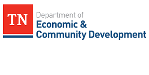
This project will establish a roadmap for seamless access to job locations in Tennessee in following ways. Develop a system that effectively handles pre-bookings, real-time requests, and dynamic scheduling to ensure employees arrive on time for their shifts? Design of micro-transit service zones so that they can be used as an effective feeder system between micro-transit and fixed-line while guaranteeing arrival times. Create sustainable Fare Structure for Long-Term Viability, Equity, and Fairness. This project will go beyond regional improvement by establishing a collaborative framework for AI-powered multimodal transit. This project can serve as a statewide model for increased accessibility, job creation, and a more sustainable transportation ecosystem. The project's success will pave the way for a future where public transit is not just a viable option, but the preferred choice for efficient and connected communities. In West Tennessee, the project will facilitate collaboration with Ford, SK Innovation, MATA, and TCAT to design, develop, and deploy a multi-modal transit system for BOC employees and nearby residents. Especially connecting rural, suburban, and urban residents to have seamless access to Blue Oval City creating access from houses to newer jobs. In East Tennessee, the project will work with large employers such as Volkswagen, CARTA, Southeast Human Resource Agency and others in Chattanooga metropolitan and adjacent rural area along with to help identify key transit routes, optimal parking locations, and multimodal solutions that cater to both urban and rural commuters, especially access to jobs.
Sponsored by: Tennessee Economic and Community Development (TN-ECD), PI- Mishra. 2024-2025.
Freight Truck Trajectory Data Initiative
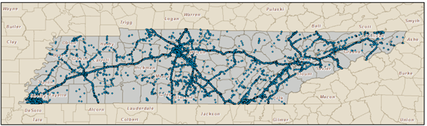
A new project is underway to create a national-scale, continuous data collection system for tracking heavy-duty freight truck vehicle trajectories. This project will establish a cloud-based archive that houses a comprehensive database of unimputed trajectory data points, offering valuable insights into the performance of the nation's transportation system. Along with the data collection, advanced tools will be developed to convert these trajectory data points into actionable transportation performance measures, including travel times, vehicle flows, speeds, queues, parking, tours, and trip purposes. These insights will be essential for freight transportation planning and initiatives such as the Freight Performance Measures (FPM) program and the Freight Mobility Initiative (FMI). The data gathered will enhance understanding of the U.S. transportation network's performance, the flow of goods and vehicles, and the broader social, economic, and environmental impacts connected to transportation systems.
Sponsored by: Bureau of Transportation Statistics (BTS), US Department of Transportation, PI- Mishra. 2024-2026.
Implementation Strategies to Reduce Alcohol-Impaired Motor Vehicle Crashes in Tennessee
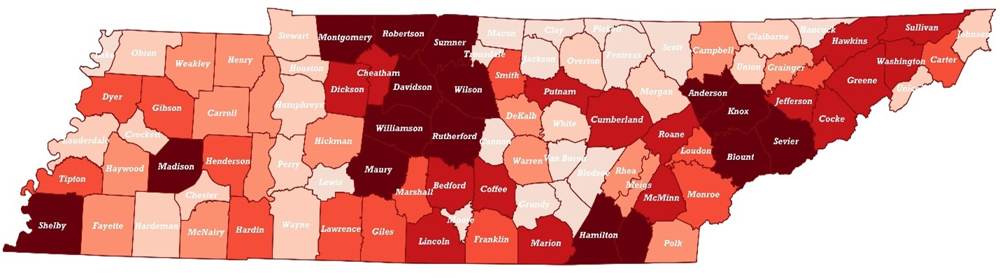
Alcohol-impaired driving is a critical public safety concern, contributing to a significant number of fatalities annually. According to the National Highway Traffic Safety Administration (NHTSA), fatal crashes involving alcohol-impaired drivers have shown an increasing trend, with an average of 36 deaths per day, equating to one fatality every 40 minutes. The economic burden of these crashes reached $123.3 billion in 2020. This project aims to develop a comprehensive risk analysis framework to identify patterns, trends, and high-risk groups associated with alcohol-impaired driving. The study will incorporate temporal and spatial analyses to uncover peak periods and hotspot locations. This will further help the safety agencies enforce the sobriety checkpoints more effectively for geographic areas associated with the highest crash expectancy. This project also focuses on the implementation of targeted educational campaigns with the motive of creating awareness on the effects of impaired driving.
Sponsored by: Tennessee Highway Safety Office (THSO), PI- Mishra. 2024-2029.
Influencing Mode Shift through Behavioral Change Strategies
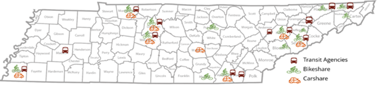
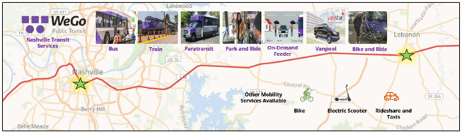
The goal of this project, "Influencing Mode Shift through Behavioral Change Strategies- Phase II," is to facilitate a meaningful shift in commuters' mode of transportation from single-occupancy vehicles (SOVs) to more sustainable alternatives. By integrating behavioral nudging techniques into a mobile application, the project aims to influence commuter behavior and promote the adoption of eco-friendly transportation options. Building on Phase I's analysis of nudging messages' impact on stated travel preferences, this project will implement and evaluate behavioral nudges within a real-world pilot study conducted within Tennessee.
Sponsored by: Tennessee Department of Transportation, PI- Mishra. 2024-2026.
Comparative Analysis of Reduced Distracted Driving Among Shelby County Adolescents from 2023 to 2025
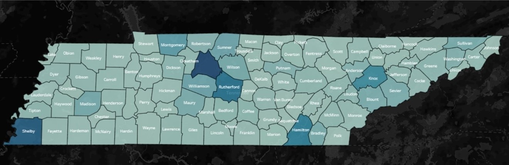
According to the National Highway Traffic Safety Administration (NHTSA, 2023), fatal crashes involving distracted driving have shown an increasing trend in recent years, with adolescents representing the age group with the highest proportion of such crashes. This project aims to evaluate the effectiveness of educational campaigns targeted at the student population to enhance awareness and knowledge regarding distracted driving behaviors. This project employs a driving simulator to assess perceptions of distractions caused by billboards, advertisements, and other roadway environmental factors. This technology enables the analysis of participants' attention focus and reactions, providing insights into the effectiveness of various advertisements. Additionally, the project involves a comparative analysis of the effectiveness of social media versus print media campaigns in raising awareness about distracted driving among adolescents. These efforts are designed to identify the most impactful medium for reducing distracted driving behaviors in this high-risk demographic.
Sponsored by: Tennessee Highway Safety Office (THSO), Co-PI- Mishra. 2024-2025.
Influencing Mode Shift Through Behavioral Change Strategies Phase 2

The goal of this project, "Influencing Mode Shift through Behavioral Change Strategies – Phase II," is to facilitate a meaningful shift in commuters' mode of transportation from single-occupancy vehicles (SOVs) to more sustainable alternatives. By integrating behavioral nudging techniques into a mobile application, the project aims to influence commuter behavior and promote the adoption of eco-friendly transportation options. Building on Phase I's analysis of nudging messages' impact on stated travel preferences, this project will implement and evaluate behavioral nudges within a real-world pilot study conducted within Tennessee.
Sponsored by: Tennessee Department of Transportation, PI- Mishra. 2024-2026.
Public Messaging and Behavior Change Systems for Circular Economies
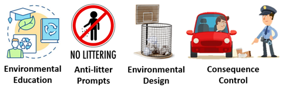
Roadside litter makes the roads visually unpleasant and is associated with social, economic, and environmental issues. It can cause safety and operational issues, such as traffic flow interruptions and safety hazards to road users. Littering has been a concern in the United States since the 1950s, and many federal, state, local, and volunteer efforts have been taken to address this problem. Even with a number of efforts, no substantial reduction in the pounds of litter removed was found. It is unclear what programs are effective, what organizational structure works, and what strategies are successful. This research would deliver a detailed appraisal of the effective strategies and programs to change people’s littering behavior and curtail roadside littering. In addition to littering, another problem is recycling of roadside litter. What approaches of recycling are effective, what is currently being done, and how effective circular economies can be accomplished are investigated in this project.
Sponsored by: Tennessee Department of Transportation, PI- Mishra. 2023-2024.
Applying Induced Travel Study in Urban Areas in Tennessee
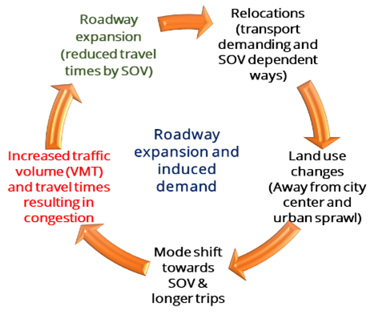
Transportation planning practices have primarily focused on highway capacity improvement projects (new roads or lanes) to tackle such issues. However, despite generating undeniable economic benefits, such projects are costly and likely to generate induced travel in terms of increased distribution of (spatial and temporal) volume and vehicular travel speed, contributing to a rise in existing VMT levels. Specifically, induced travel can increase commercial or personal driving because of diversions from other roadways and shifts to single-occupant vehicles (SOV) from public transit or non-motorized transport. For instance, from 1993 to 2017 in Nashville, despite an almost equal growth in population and freeway lane-miles (101% and 107%), the congestion grew by 330%. In 2015, California DOT (Caltrans), in response to Senate Bill (SB) 743, selected VMT over the traditional method of the level of service (LOS) for determining travel impacts and evaluating induced travel in transportation projects. Established methods and best practice case studies to incorporate induced travel in transportation planning practices is getting attention but yet to be fully explored. In this project, we aim to address the importance of induced demand by (i) applying the best strategies to quantify induced travel; (ii) developing user-friendly tools for preliminary identification of induced travel in any transportation project; (iii) encouraging stakeholder engagement by understanding their perceptions towards the concept of induced travel; and (iv) developing a state-of-the-art playbook delineating best TDM strategies to influence driver behavior to reduce induced travel generated due to highway capacity improvement projects at both local and regional levels.
Sponsored by: Tennessee Department of Transportation, PI- Prof. Angela Antipova, Co-PI - Mishra. 2023-2024.
Transit Asset Management Using Vehicle Telematics Data and Electric Fleet
Transit agency is often challenged with developing an optimal plan for asset procurement, operation, and maintenance. A strategic Transit Asset Management (TAM) plan would benefit an agency greatly in terms of keeping their asset in the state of good conditions while simultaneously does not exceed the available budget at any given point of time during the planning horizon. The scope of this project includes 1) development of a Decision Support Tool on finding the Optimal Asset Maintenance Plan for every Investment Scenarios, 2) analysis of risk impacts on asset state of good repair, 3) updating the TAM plan to involve safety and security in the development process to make sure the prioritization of the TAM plan and the programing and expenditure of funds is prioritized with safety considerations for keeping assets in a state of good repair, 4) integrate predictive maintenance process into TAM plan using vehicle component telematics and diagnostic data, and 5) prepare a roadmap of how different activities (fleet planning, PTASP, new asset procurement processes, etc.) occurring at MATA are cross-linked along with reporting timelines so that all efforts can be coordinated.
Sponsored by: Memphis Area Transit Authority, PI-Mishra, Co-PI - Prof. Mihalis Golais. 2023-2024.
E-scooter crash information from TITAN
This study aims to bridge that gap by investigating associations between crash locations, maneuvers, and severities. Moreover, the objective of the current study is to uncover previously unknown variable associations or quantify known variable associations with practical implications. The findings provide valuable insights into e-scooter crashes and will help to develop mitigating strategies that improve safety for motorists and non-motorists. To achieve the research objectives, the current study utilized the Enhanced Tennessee Roadway Information Management System (ETRIMS) and TITAN to identify and collect e-scooter crash data. In addition, PBCAT was used to obtain crash typologies based on maneuvers and facility type. Finally, conclusions were drawn through analysis using descriptive statistics and visualizations. The stepwise procedure followed for this study is outlined in the next section.
Sponsored by: Indiana University Purdue University Indianapolis, and Toyota Mobility Foundation, PI. 2022-2023.
Advancing technology-enabled mobility solutions (TEAM-TN)
Our goal is to create a self-sustaining innovation ecosystem in which advanced industries and Tennessee communities thrive, including a large and diverse array of innovation assets (capital, advanced industries, colleges and universities, STEM professional and skilled technicalworkforce talent, research institutions, etc.). TEAM Engine will leverage NSF funding and funding from the State of Tennessee and from other federal agencies with complementary interests. During the development phase, TEAM Engine will assemble a Sustainability Working Group charged with exploring sustainability strategies that include, for example, leveraging other sources of state and federal funding, tiered membership models, incentive models that return a portion of TEAM Engine enabled revenues to the coalition, and others. The working group will produce a set of recommendations to be considered by the CEO and his Leadership Team and, ultimately, the Governance Board.
Sponsored by: National Science Foundation (NSF), PI: Dr. Kevin Heaslip (UTK), Co-PI: Mishra, 2023-2025.
IUCRC Planning Grant The University of Memphis: Center for Electrified and Autonomous Transportation in Agile Freight Supply-Chains (CEATAFS)
CEATAFS will be planned to advance research in freight management, supply chain planning, agile logistics, platooning/caravanning, remotely driven and driverless trucks, long-haul electrification, geofenced and smart infrastructure, and last-mile services. CEATAFS research will help scale up the application of connected, electrified, and autonomous vehicles in the logistics and trucking industries, transforming digitally enabled supply chains and increasing e-commerce efficiency. A two-day planning workshop will be held to engage and attract industry members to further refine the research concepts, establish value propositions, and develop a multidisciplinary research agenda aligned with industry members' innovation and technology interests. Potential topics that CEATAFS may investigate include: (i) autonomous vehicle adoption models and business cases; (ii) operational strategies such as platooning and caravanning; (iii) vehicle-to-vehicle and vehicle-to-infrastructure communication systems for efficient autonomous operation; (iv) electrification of long-haul trucking with highly durable fuel-cells and optimal deployment of charging stations; and (v) strategies for overcoming the transportation workforce deficit. Conceptual and operational challenges of deploying electric and autonomous freight transportation systems will be explored by converging knowledge in engineering analysis, behavioral sciences, and business analytics.
Sponsored by: National Science Foundation, PI, 2022-2023.
FW-HTF-P: Building Human-Technology Safety Partnerships in Roadside Work Zones
In the past two decades, more than 22,000 highway construction and maintenance workers have died due to work-related accidents, which translates to a societal cost of $55 million/year. Nevertheless, alerting a worker to an emergency in real-time is extremely difficult, as the work environment is noisy and chaotic, filled with visual distractions, heavy vibrations, and loud noises. Identifying threats and taking appropriate action is very challenging, especially when the time available to respond is very brief. This project explores the concept of using connected wearable technology to create smart work zones that would enhance workers' safety & comfort. This wearable device would assist workers in identifying and warning of potential threats/hazardous situations, give initial preemptive guidance, and help them find a way to safety. The research team aims 1) to provide virtual reality (VR)-based tools for training workers and 2) to provide agencies and contractors with guidelines for best practices for worker safety in the emerging sociotechnical landscape.
Sponsored by: National Science Foundation, PI, co.PI. Dr. Lopes (U Chicago), 2022-2023.
Informed Safety, Mobility, & Driver Comfort Enhancement Practices for Work Zones: Learnings from High Fidelity Data
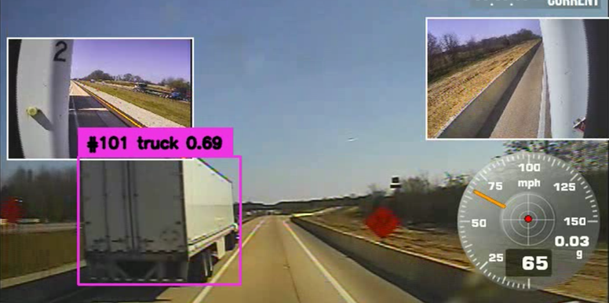
In the past two decades, more than 22,000 highway construction and maintenance workers have died due to work-related accidents, which translates to a societal cost of $55 million/year. Nevertheless, alerting a worker to an emergency in real-time is extremely difficult, as the work environment is noisy and chaotic, filled with visual distractions, heavy vibrations, and loud noises. Identifying threats and taking appropriate action is very challenging, especially when the time available to respond is very brief. This project explores the concept of using connected wearable technology to create smart work zones that would enhance workers' safety & comfort. This wearable device would assist workers in identifying and warning of potential threats/hazardous situations, give initial preemptive guidance, and help them find a way to safety. The research team aims 1. to provide virtual reality (VR)-based tools for training workers and 2. to provide agencies and contractors with guidelines for best practices for worker safety in the emerging sociotechnical landscape.
Sponsored by: National Science Foundation, PI, co.PI. Dr. Lopes (U Chicago), 2022-2023.
Strategies for Improved Driver Behavior within Work Zones
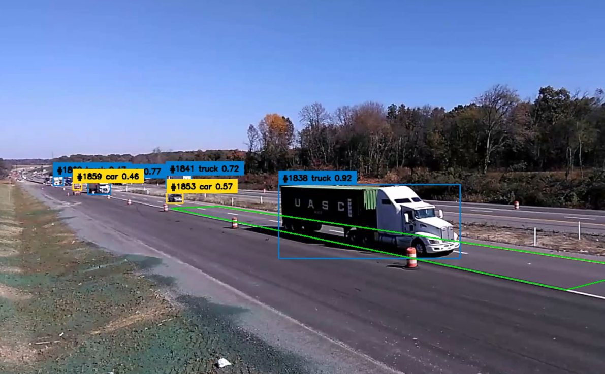
This project consists of two stages. The first stage is a closed-course study where all the obstacles of pilot research and data collection will be determined. A WZ with different control and enforcement measures will be set up in a closed course setting, and test drives will be made with recruited drivers. From the experience of the closed-course pilot study, a detailed plan for the on-site pilot study (stage 2) will be developed.
Sponsored by: Tennessee Department of Transportation, PI, co.PI. Dr. Golias, 2022-2024.
Influencing Mode Shift Through Behavioral Change Strategies

This project will 1) investigate strategies that have successfully nudged travelers towards SOV alternatives through behavioral change, 2) gather detailed information on the current state of TDM practices in the state and provide recommendations, 3) survey travel behavior and preferences of commuters concerning TDM implementations for potential interventions, and 4) assess the impact of different TDM measures on congestion and traffic. The research team will develop survey and visualization tools to accomplish these aims.
Sponsored by: Tennessee Department of Transportation, PI, co.PI. Dr. Golias, 2022-2024.
Identification of Simulation Calibration Parameters using Urban Freeway Data
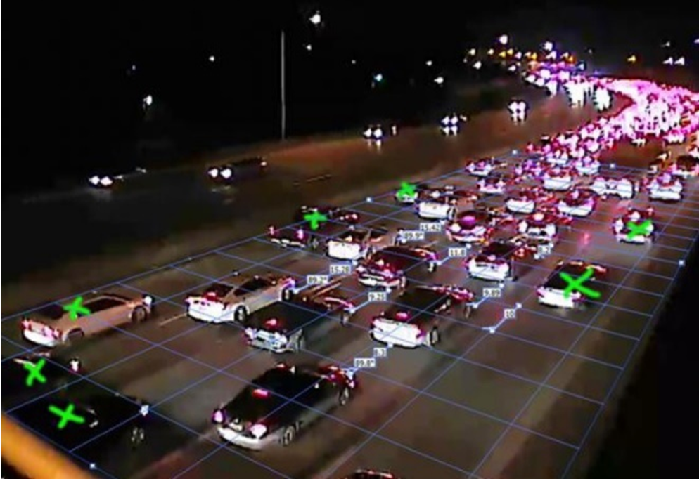
Current TDOT user manual use calibration parameters based on best practices obtained from manuals developed by other state DOTs, and limited field data from VISSIM based projects in Tennessee. However, it is critical to determine various calibration parameters to develop calibrated models for local conditions which could provide reliable simulation results. In these contexts, data-driven and Tennessee specific calibration parameter development, would be beneficial in enhancing TDOT’s model development and reliability of microsimulation-based traffic analysis. State specific calibration parameters could provide a more accurate representation of actual traffic flow, and reliable traffic analysis results will assist traffic operational decision-making process by balancing needs and resources.
Sponsored by: Tennessee Department of Transportation, PI Dr. Golias, 2022-2024.
More Effective Use of Tennessee Waterways to Account for Competing Uses and Address Freight Congestion

The goal of the project is to develop a set of recommended strategic objectives for the Tennessee Department of Transportation (TDOT) that support safe, reliable, and resilient use of TNs IWS and, at the same time, maximize economic impact, support investment decisions, and foster workforce preservation and development. To achieve this goal, this research has the objectives to develop a knowledge bank on best practices on inland waterway programs, web-based and desktop Data Analytics and Decision Support (DADS) tools that analyze and synthesize the available data on TNs IWS and its assets (e.g., ports, terminals, locks, etc) into a set of performance stressors, metrics, and indices.
Sponsored by: Tennessee Department of Transportation, PI Dr. Golias, 2022-2024.
Evaluating Transit Accessibility to Food, Education, Recreation, and Other Essential Services in Tennessee
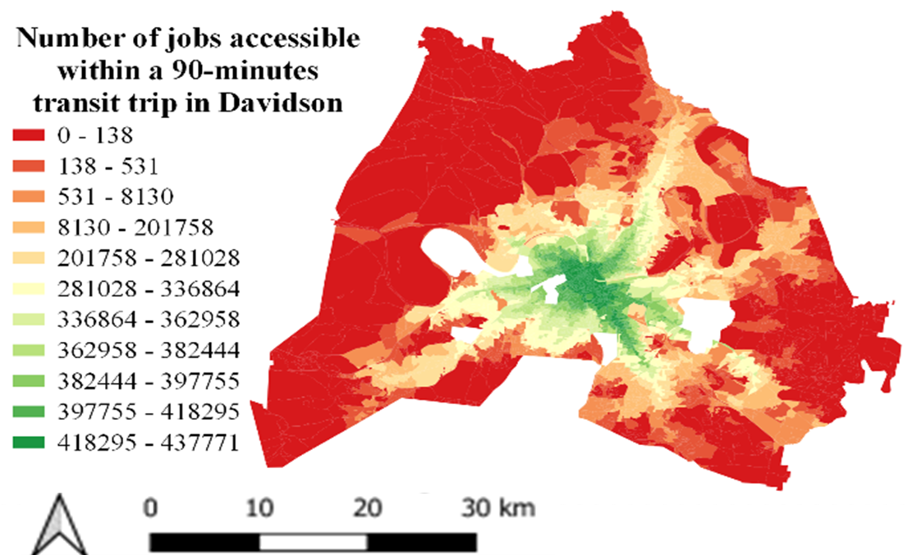
Although providing access to jobs is an important function of public transit, other travelers use transit to get to grocery stores, healthcare facilities, schools, or outdoor recreational areas, which are not typically considered in transit accessibility analyses. These critical destinations are essential for independence, health, and quality of life. Research is needed to evaluate the transit accessibility to food, healthcare, education, recreation, and other essential services for low-income populations in Tennessee in helping to better determine the value of transit for riders.
Sponsored by: Tennessee Department of Transportation, Joint project with UTK PI Dr. Brakewood, 2022-2024.
Modeling Household E-commerce Delivery Rates and Assessing their Equity and Freight Travel Impacts

This research project offers multiple benefits to the freight mobility sector. Quantifying the disaggregated demand of delivery packages will provide data inputs for evaluating the traffic congestion and emission due to reduced drive-alone shopping trips and increased last-mile delivery trips. The outcomes are expected to complement the implementation of equity-based delivery services (prioritizing the areas with the high demand). From consumers' perspective, the research outcomes can further analyze the travel time reduction due to foregone shopping trips.
Sponsored by: Freight Mobility Research Institute, US DOT Tier-1 Center, Joint project with PSU and FAU, PI, 2022-2023.
Accelerating Innovative Mobility
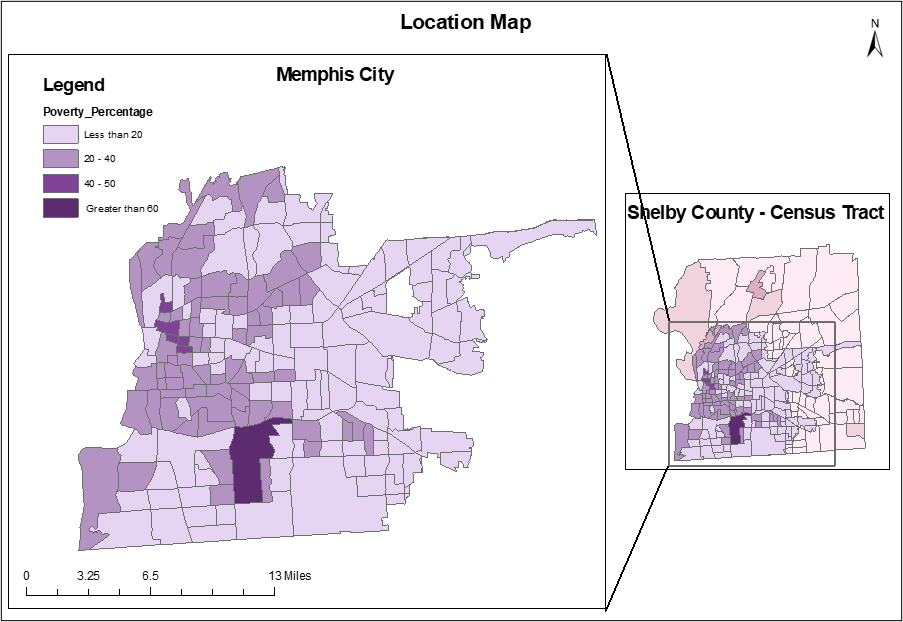
The project consists of two phases. The first amalgamates the current planning and implementation processes in Memphis and through their direct connection and web links posting on the Memphis Area Transit Authority (MATA) website provides communication and information to customers and communities at one location. In so doing, it establishes the MATA website as the go to place for not only information, but to learn about the all the mobility opportunities and partnerships that are developing in Memphis. Further it creates a Mobility Coordinator role for MATA as either the direct provider or facilitator of mobility services or the virtual communicator of all other mobility opportunities. The second phase would emphasize the Incubator potential in Memphis looking outwards to adding partners, updating technology and communications, building more linkages from rural areas, etc. MATA would also reconsider its organizational plan and strategies to best facilitate mobility in Memphis.
Sponsored by: Federal Transit Administration and Memphis Area Transit Authority, 2021-2023. (P.I)
Modeling the adoption, distribution, and utilization of autonomous delivery robots and delivery lockers in the aftermath of the COVID-19 pandemic

The ongoing COVID-19 pandemic and the need for contactless deliveries that avoid the risk of person-to-person infection has made it clear that autonomous robot deliveries have many advantages. In addition, complementary systems like self-serve lockers are appealing since they reduce human contact but also increase the last-mile delivery efficiency. The key objectives of this proposal are related to the adoption, distribution, and utilization of autonomous delivery robots and delivery lockers in the US in the aftermath of the COVID-19 pandemic.
Sponsored by: Freight Mobility Research Institute, US DOT Tier-1 Center, Joint project with PSU and FAU, PI, 2019-2022. (P.I)
Quantitative Evaluation of Truck Caravanning
[image credit: the conversation] Truck caravanning is defined as a hybrid platooning with only one truck driver per platoon, the leader. Truck caravanning, capitalizing on the availability of SAS Level 5 automated trucks, has the potential to extend the profit and service quality for freight business beyond and in addition to benefits achieved by truck platooning. To date, extremely limited number of research efforts have reported/explored the truck caravanning potential for monetary savings from the use of smaller number of truck drivers. Research in Truck platooning operational models in general, have solely focused on savings from fuel consumption and emissions reduction, which numbers found in the literature vary greatly and are questioned among researchers. The goal of this research is not to evaluate the technical feasibility of truck caravanning, but rather to develop and use mathematical models and sensitivity analysis to evaluate and estimate cost savings from freight operations employing truck caravanning. In this project, and unlike research published for truck platooning or caravanning to date, cost savings are easily verifiable as only driver compensation is considered. Any cost savings from fuel and/or emissions reduction are considered only at the general implementation level of the proposed operational model for completeness as well as to allow comparison of the different elements involved in the overall cost/benefit calculation.
Sponsored by: Freight Mobility Research Institute, US DOT Tier-1 Center, Joint project with UMN and FAU, PI, 2019-2022. (Co-P.I), PI - Dr. Golias
Evaluating the Adoption and Impact of Autonomous Delivery Modern Technologies
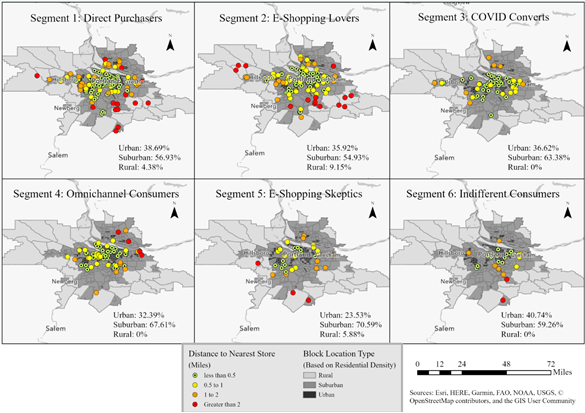
The tourism industry is the second-largest economic sector in TN. Recognizing the contribution and growth potentials of the tourism industry and the importance of associated transportation systems and services, states with the highest tourist traffic volume have been integrating tourism aspects in all forms of transportation planning, investment decision making, and management. Tourism EconomyThis project develops policy guidelines for TDOT considering multimodal and sustainable transportation systems and services that promote the tourism industry to maintain a competitive advantage to the TN tourism industry compared to other states. The primary benefits and deliverables of this research study are(i) Sustainable transportation systems and services planning and management- best practices; (ii) Tourism specific travel demand model that can be integrated with statewide travel demand model; (iii) Evaluation of existing multimodal transportation services in TN for tourism; (iv) Analysis of alternative sustainable transportation systems and services polices; and (v) Policy guidelines, indicators and standards on sustainable transportation systems and services for TDOT.
Sponsored by: Freight Mobility Research Institute, US DOT Tier-1 Center, Joint project with PSU and FAU, PI, 2019-2022. (P.I)
Optimal Refueling Gas Station Locations in post-evacuation Conditions
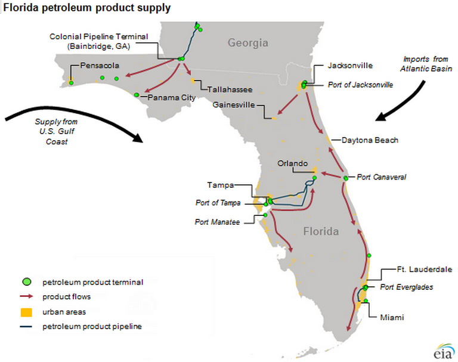
[image credit: Miami Herald] The objective of this research is to minimize the time and limited homogeneous fleet of multi-compartment trucks that need to distribute the available fuel to the customers, using time windows. The main difference of this problem from the classic gas station replenishment problem (GSRP) is that a part of the customers will be satisfied since the available fuel and the fleet of trucks provided by the company are limited. The main purpose of this research is to satisfy the petrol stations in different areas, prioritizing the ones with the highest demand. To tackle this problem, the research team plans to develop a mathematical model that will optimize fuel distribution after evacuation. In order to formulate the problem, the combination of the PSRPTW and the MCVRP has been proposed. The objective of this problem is to minimize the transportation time needed to transfer the fuel from the fuel tank to the petrol stations, using time windows. To solve the resulting problem exact and heuristic approaches will be investigated and the “best” will be selected (most likely a hybrid heuristic to improve or remove completely the stochastic search step of commonly used/built heuristics for these types of problems).
Sponsored by: Freight Mobility Research Institute, US DOT Tier-1 Center, Joint project with FAU, PI, 2019-2022. (Co-P.I), PI - Dr. Golias
Towards Sustainable Tourism Transportation Systems and Services in Tennessee
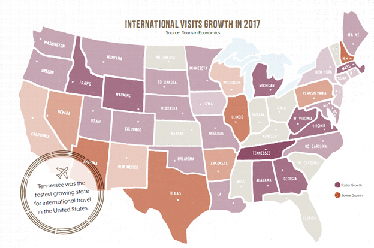
The tourism industry is the second-largest economic sector in TN. Recognizing the contribution and growth potentials of the tourism industry and the importance of associated transportation systems and services, states with the highest tourist traffic volume have been integrating tourism aspects in all forms of transportation planning, investment decision making, and management. Tourism EconomyThis project develops policy guidelines for TDOT considering multimodal and sustainable transportation systems and services that promote the tourism industry to maintain a competitive advantage to the TN tourism industry compared to other states. The primary benefits and deliverables of this research study are(i) Sustainable transportation systems and services planning and management- best practices; (ii) Tourism specific travel demand model that can be integrated with statewide travel demand model; (iii) Evaluation of existing multimodal transportation services in TN for tourism; (iv) Analysis of alternative sustainable transportation systems and services polices; and (v) Policy guidelines, indicators and standards on sustainable transportation systems and services for TDOT.
Sponsored by: Tennessee Department of Transportation, 2020-2022. (P.I)
Connecting Demand Response Transit with Fixed Service Transit
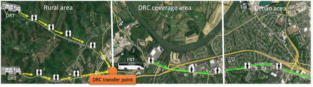
Fixed Route Transit (FRT) and Demand Response Transit (DRT) when operated independently results in less coverage and high operating costs respectively. This TDOT research proposal will provide a methodological framework for connecting FRT and DRT together. With this research, transit agencies will be able to benefit in the following aspects: 1) Connecting DRT with FRT will provide transit accessibility to a larger population and hence will result in an increase in ridership which in turn will boost the transit revenue. 2) DRT will also be able to provide mobility to the elderly and disabled population which in turn will reduce the high operating costs associated with paratransit services, 3) The proposed concept will also provide a framework to convert underutilized FRT routes to DRT which in turn will result in optimal use of transit fleet and will result in cost savings as only the existing operating FRT route vehicle will be used to complete demand-responsive trips.
Sponsored by: Tennessee Department of Transportation, 2020-2022. (P.I)
Understanding Freight Impact on Tennessee Communities
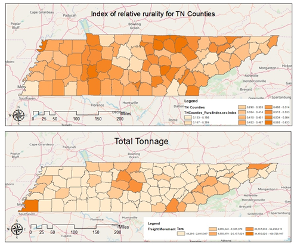
The proposed research will provide TDOT personnel as well as local transportation agencies with a ready and easy to use guidebook supported by a GIS tool that streamlines the tasks of identifying, taxonomizing, and ranking strategies (based on cost, benefits, and barriers to implementation) to improve freight transportation and minimize/mitigate the externalities they cause. The developed guidebook and tool will support planning, tactical, and operational freight improvements at the state and local level that simultaneously optimize freight movements and minimize their externalities (e.g., environmental, congestion, health) to the communities they serve.
Sponsored by: Tennessee Department of Transportation, 2020-2022. (Co-P.I), PI - Dr. Golias
Wrong-way driving crashes in Tennessee and prevention technology
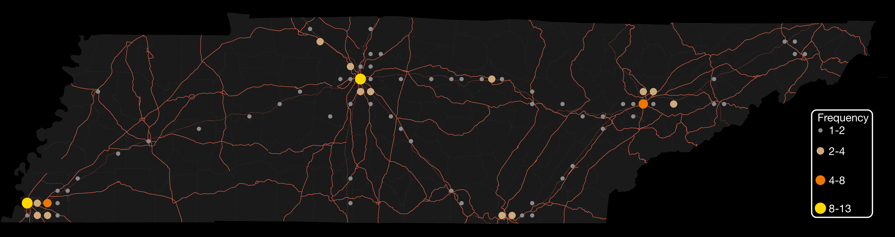
Wrong-way driving (WWD events occur when a driver enters against the right traffic-flow direction of a divided highway (e.g., freeways). The most frequent WWD incident location is a freeway ramp and according to National Transportation Safety Board, 360 wrong-way driving related fatalities occurred annually between 2004 and 2011 in the US. While a small percentage of total crashes (approximately 3%) WWD severity level was much higher than non-WWD crashes. Tennessee is one of the top 10 states with the highest number of WWD involved fatality in the U.S. The leading contributing factors of WWD crashes are traffic violation due to driving under influence, inattention due to fatigue and distractions, impaired judgement due to physical and age-related issues, unfamiliarity with roadways, and any infrastructure deficiencies such as poor lighting, limited line of sight, heavy vegetation. This project first aims to analyze the statistics of wrong-way crashes in TN and determines the main contributing factors. Next several wrong-way prevention technologies are suggested, tested, and deployed and selected testing sites. Therefore, the performance of each technology can be assed and along with the life cycle cost analysis and administration opinion, we can recommend the three best technology for implementation at selected sites.
Sponsored by: Federal Highway Administration, and Tennessee Department of Transportation, 2019-2021. (Co-P.I), PI - Dr. Golias
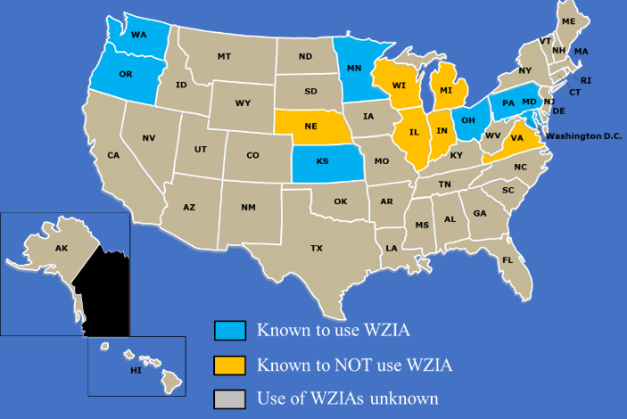
Work Zone Alert Systems
Work zones have significant impacts on traffic conditions as well as on motorist and agency/contractor personnel safety. The growth of travel on the roadway system in the United States and recent adverse weather conditions has accelerated the deterioration of pavement, leading to constant pavement repairs and roadway rehabilitation. Based on how severe a work zone crash can be, the associated fatalities, injuries and property damage will lead in moderate to high costs, not to mention costs associated with damage in high value goods transported, and higher travel delays and relative cost impacts. As a result, many states are paying special attention to work zone intrusions—crashes caused with civilian vehicles erroneously enter work zones. Of particular interest to the Tennessee Department of Transportation (TDOT) are work zone intrusion alert systems (WZIAs). This class of safety devices is intended to recognize when a work zone intrusion is occurring, and to alert the driver and nearby workers of the intrusion so that they can respond appropriately. The proposed research aims to study the literature to hypothesize best practices and most valuable WZIA products, and will test those hypotheses in order to provide a recommendation to TDOT for WZIA implementation based on low cost, low rate of false alerts, ease of use, and ability to live-track work zone intrusions across the state.
Sponsored by: Tennessee Department of Transportation, 2018-2020. (P.I)
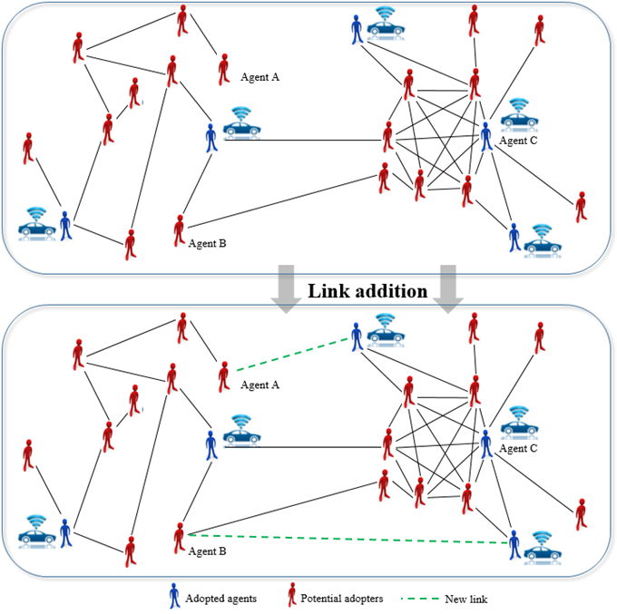
The Impacts and Adoption of Connected and Autonomous Vehicles in Tennessee
Connected and autonomous vehicles (CAVs) have a potential to revolutionize the daily travel modes, in terms of personal, public or shared mobility, because of their potential of technology-assisted driving and hence minimizing errors caused by human In addition to safety, CAVs will provide additional benefits in terms of ability to multitask during travel, flexibility in travel (relocating the house to farther and more convenient location), reduced parking and running costs, travel time savings due to the reduction in congestion and accessibility to elder and non-license holder individuals. However, such benefits will also come at the cost of numerous anticipated barriers like accident liabilities, data safety concerns, the addition of new infrastructure, and increased emissions because of increase in vehicle miles traveled. In the US, 22 states including Tennessee have already passed legislation for operating CAVs on public roads. However, until the CAVs meet the perceptions, demands, beliefs, and needs of end-users at a justified cost, their adoption is uncertain. Adoption research from non-transportation related innovation suggests that social network plays a pivotal role in deciding whether to adopt, defer, or not to adopt. The objective of this research is to understand, model, and predict CAV market penetration in Tennessee over time based on residents’ social network.
Sponsored by: Tennessee Department of Transportation, 2018-2020. (P.I)
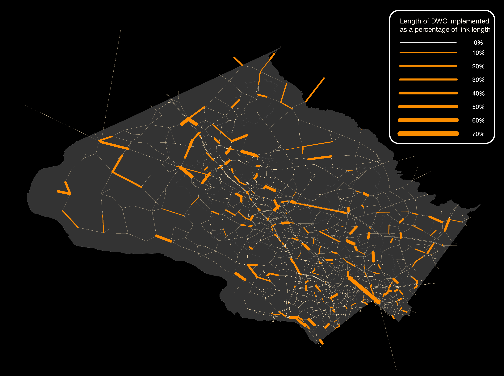
Identification of stationary and wireless charging stations for battery operated electric vehicles in smart cities
Battery electric vehicles (BEVs) provide a more energy-efficient way of traveling than internal combustion engine vehicles (ICEVs) and the consumer adoption of BEVs is on the rise. Despite BEVs’ outstanding energy efficiency and the potential to mitigate greenhouse gas emissions from the transportation sector, there are constraints and because of which BEVs are unable to compete with ICEVs. These constraints include extended recharging time, limited driving range, and an insufficient number of charging facilities. To overcome these constraints, dynamic wireless charging (DWC) prompts as a plausible solution. DWC technology allows BEV being charged while in motion. This raises a traditional question often encountered in practice for infrastructure investment: how to determine optimal locations of DWC infrastructure in a network. In this paper, we propose a sequential two-level planning approach considering the objectives of both the public infrastructure planning agency and the BEV users.
Sponsored by: FedEx Institute of Technology, 2019-2020. (P.I)
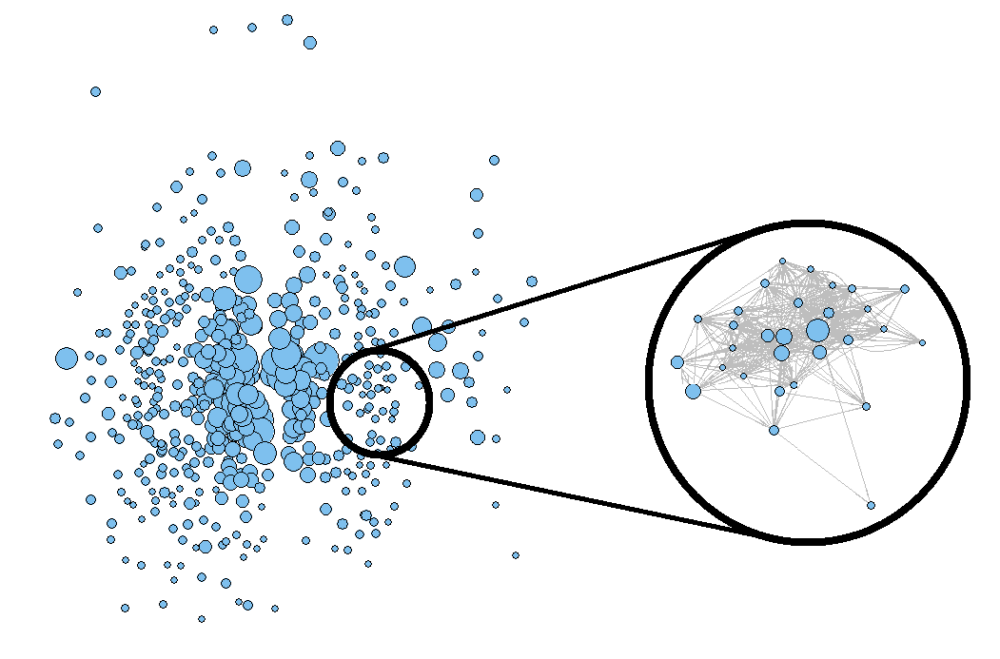
Next Generation of Freight Planning and Operation Models To Incorporate Emerging Innovative Technologies
This project leverages expertise from three universities (FAU, PSU, UoM) and attempts to accomplish the project objectives to (1) quantify adoption of connected and autonomous trucks by freight organizations, (2) incorporate truck platooning in transportation planning and operation models, (3) analyze the emissions impacts of last mile deliveries by delivery robots, (4) study how disruptive technologies are affecting intermodal transportation, and (5) outline future research necessary to address the opportunities and challenges created by disruptive technologies.
Sponsored by: Freight Mobility Research Institute, US DOT Tier-1 Center, Joint project with PSU and FAU, PI, 2019-2020. (P.I)
Developing a Methodology to Predict the Adoption Rate of Connected Autonomous Trucks in Transportation Organizations Using Peer Effects
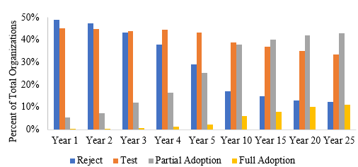
Our research presents a methodology for predicting the adoption rate of Connected Autonomous Trucks (CATs) in transportation organizations using peer effects. There are a number of different factors that must be considered when developing innovation adoption models for organizations, including relative advantage, perceived risk, organizational size, public opinion, compatibility with the organization’s needs, and competition. We describe each of the relevant variables and combine them into a discrete choice model for predicting the adoption rate of CATs by a hypothetical sample of transportation organizations. The model incorporates new peer effect modeling techniques to simulate the competition and informal communication network. Organizations are placed in a 4-dimensional space, and the peer effects on organizational adoption decisions are simulated using a graph theory model. Preliminary results suggest that organizations which are larger are less likely to change their decisions due to the decisions of other, competing organizations, whereas smaller organizations are more easily influenced by the decisions of larger organizations. The methodology developed from our research produces reasonable and useful results using a hypothetical dataset, and the methodology has been designed to be transferrable to any number of organizational innovations.
Sponsored by: Federal Highway Administration, and Tennessee Department of Transportation, 2018-2020. (P.I)
Development of Statewide Land Use Forecasting Model and Integrate with TDOT’s Statewide Travel Demand Model.
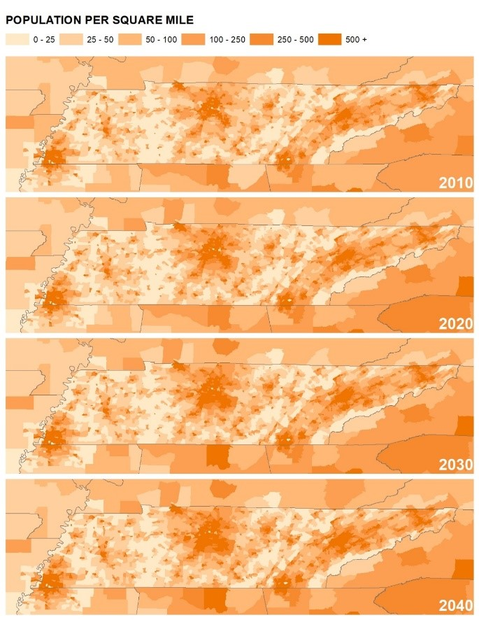
Our research presents a methodology for predicting the adoption rate of Connected Autonomous Trucks (CATs) in transportation organizations using peer effects. There are a number of different factors that must be considered when developing innovation adoption models for organizations, including relative advantage, perceived risk, organizational size, public opinion, compatibility with the organization’s needs, and competition. We describe each of the relevant variables and combine them into a discrete choice model for predicting the adoption rate of CATs by a hypothetical sample of transportation organizations. The model incorporates new peer effect modeling techniques to simulate the competition and informal communication network. Organizations are placed in a 4-dimensional space, and the peer effects on organizational adoption decisions are simulated using a graph theory model. Preliminary results suggest that organizations which are larger are less likely to change their decisions due to the decisions of other, competing organizations, whereas smaller organizations are more easily influenced by the decisions of larger organizations. The methodology developed from our research produces reasonable and useful results using a hypothetical dataset, and the methodology has been designed to be transferrable to any number of organizational innovations.
Sponsored by: Federal Highway Administration, and Tennessee Department of Transportation, 2018-2020. (P.I)
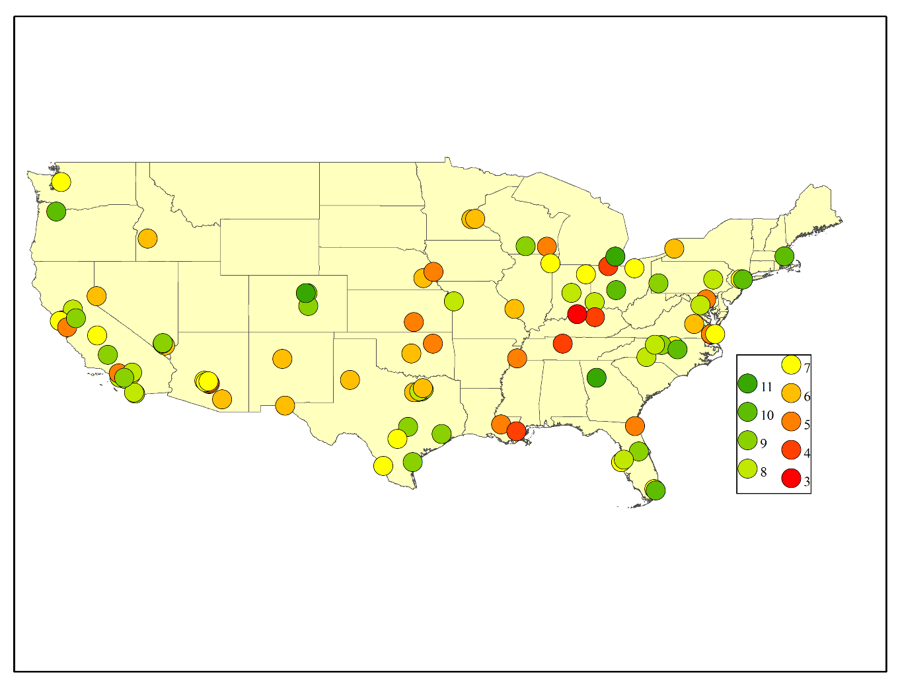
Development of a Connected and Autonnomous Vehicle Readiness Index
Connected Autonomous Vehicles (CAVs) are about to hit the roads but an important question is that how ready are our cities with respect to policies and infrastructure elements required to accommodate CAVs? By developing a holistic index for evaluating readiness for CAVs, this paper establishes the foundation for readiness analysis. The index ranks readiness of cities based on their soft and cyber infrastructure, pro-CAV policies, hard infrastructure, and other transportation supply and demand measures. We first identify 32 variables, segmented into four categories, that can plausibly foster CAV market penetration. The variables are then combined to develop a single index.
Sponsored by: University of Memphis Research Investment Fund, 2018-2020. (P.I)
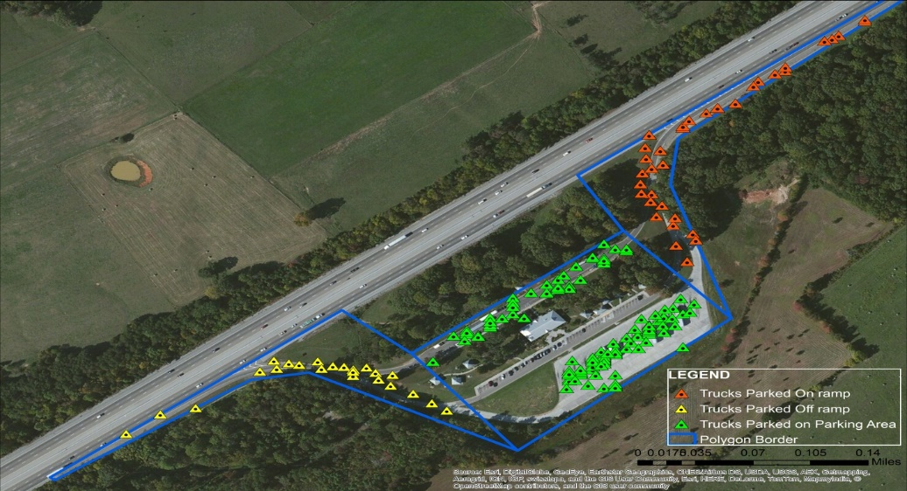
Truck Parking Needs in TN
The objectives of this research is to provide TDOT with important guidance on truck parking issues and opportunities, by identifying parking needs (i.e., addition of capacity and/or construction of new facilities); developing truck parking violation rates (i.e., truck parking on on- and off- ramps) and developing/applying a methodology to identify candidate locations for new truck parking facilities in the State of TN. This study extends the work done by Mishra et al. (2016), Golias et al. (2017) and Cherry et al. (2017) who used truck GPS and survey data to evaluate the performance of truck parking in TN.
Sponsored by: Tennessee Department of Transportation and US DOT, 2018-2020. (Co-P.I), PI - Dr. Golias

Disaggregation of Freight Flows for TN
In this research we propose to develop models and procedures to obtain regional, sub-regional, and jurisdictional level commodity flow data, demonstrate the strength of models to accurately obtain commodity flow data through case studies, illustrate the applicability of commodity flow data in travel demand models in TN, and finally prepare a guidebook that (1) details how commodity flow data should be collected and disaggregated to be used in local planning models for decision making, and to better understand freight movement in Tennessee, and (2) identifies and categorizes the current and rapidly emerging data being collected or processed by the private sector for freight movements and outline approaches, methods, and analytical techniques that enable local agencies, MPOs and state DOTs to better carry out their freight planning, programming, and operations responsibilities. .
Sponsored by: Tennessee Department of Transportation and US DOT, 2018-2020. (Co-P.I), PI - Dr. Golias
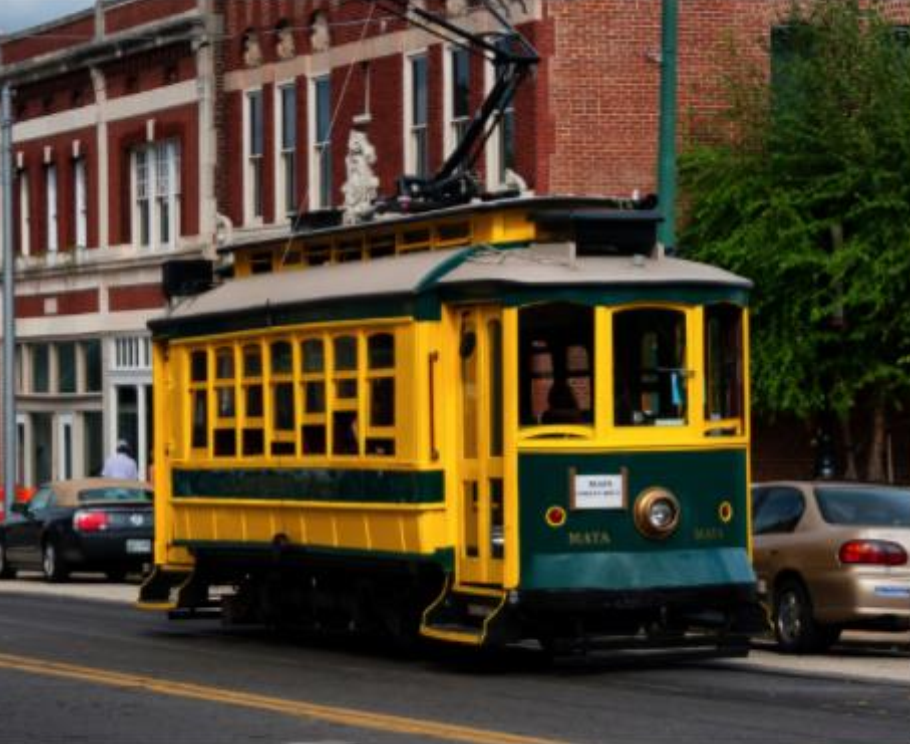
Memphis Area Transit Authority Asset Management Plan
The Federal Transit Administration (FTA) has required transit agencies in the country to develop a TAM plan. This TAM plan is meant to help the agency to track its asset inventory, asset condition, and timely maintenances. The TAM plan shall also include a portfolio of selected asset maintenance projects that suits the agency’s financial capability while maintaining its assets at good condition. As a Tier I provider, MATA should provide a TAM plan that consists of the following contents: Asset Inventory Portfolio, Asset Condition Assessment, a Decision Support Tool, and Asset Maintenance Plan. In this project, we first take stock of all MATA’s asset varying in category such as bus, trolley, building, and equipment. Second, several performance measurement parameters are suggested, and the asset condition is assessed accordingly. Finally, the Decision Support Tool is developed to generate an optimal asset maintenance plan which states for every asset, which maintenance option and when should it be implemented.
Sponsored by: Memphis Area Transit Authority 2018-2020. (P.I)
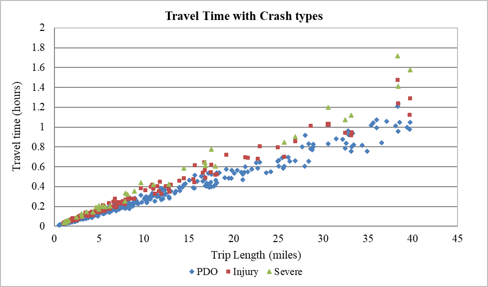
Incorporating Freight Considerations into Highway Capacity Planning Process
The goal of this SHRP2 round 5 project is to integrate freight considerations into the highway capacity planning process with additional focus on community visioning. Specific Planning Process Bundle product(s) to be addressed include: 1. Integrating Freight Considerations into the Highway Capacity Planning Process (C15) 2. Performance Measures for Highway Capacity Decision Making (C02) 3. Transportation Visioning for Communities (C08) With the planning process bundle products, the following performance measures/indicators are analyzed and summarized below. A. Efficient truck parking B. Freight corridor reliability C. Freight and land use integration.
Sponsored by: Federal Highway Administration, and Tennessee Department of Transportation, 2015-2017. (P.I), [Report PDF]
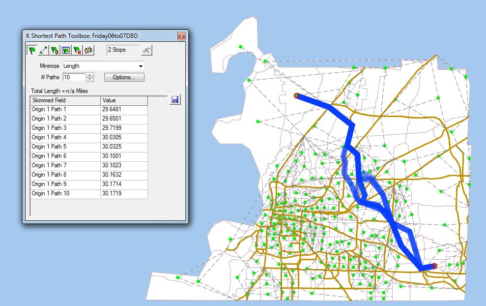
SHRP2 Round 7 (Planworks): I-40 in Tennessee- A corridor of national significance in moving freight and linking multistate communities
I-40 corridor in Tennessee can be considered as “America’s Freight Corridor”. Based on information from the Freight Analysis Framework (FAF), I-40 Corridor is one of the five (I-10, I-20, I-40, I-80 and I-70) major east-west freight corridors in the nation. Next to I-80, I-40 carries more volume of freight tonnage than any other east west interstate facility. The corridor connects from the Port of Long Beach in California through Tennessee to North Carolina. Notably, the State of Tennessee has more interstate miles of I-40 (455 miles) than any other state. The round 5 IAP research explores the reliability of the freight corridors, efficient truck parking, and land use integration to freight movement in West Tennessee. Considering I-40 corridor as a freight centric corridor with number of new and emerging initiatives at local, state and national level, a new strategic PlanWorks approach is needed that addresses “Freight Corridor Visioning” to further strengthen freight movement along the I-40 corridor. The proposed Round 7 IAP will help improve stakeholder dialogue and collaboration in the decision-making process in regard to identifying private sector expectations for corridor reliability verses public sector funding realities in the context of I-40 strategic corridor. Public sector stakeholders planning efforts provide visioning over a ten (10) to twenty-five (25) year time frame based on available resources, while the private sector has a much shorter visioning window of three (3) to five (5) years.
Sponsored by: Federal Highway Administration, and Tennessee Department of Transportation, 2015-2017. (P.I), [Report PDF]
Identifying Cost-Effective, High-Return, and Quickly Implementable Improvements to Address Freight Congestion and Mobility Constraints in Tennessee
This study compares four multidimensional resource allocation models to prioritize freight improvement projects for regional, state, and local transportation agencies to maximize return on investment. The proposed models are based on economic competitiveness with and without mutual exclusiveness in location, and equity in opportunity and outcome. Multiple dimensions of the models include the transportation mode, performance measures, improvement type, geographic regions, policy criteria, and time. Results from a case study in the State of Tennessee show that project selection based on equity in outcome provides the optimal balance between benefits and their distribution among counties, while project selection based on equity in opportunity results in the lowest total return on investment..
Sponsored by: Federal Highway Administration, and Tennessee Department of Transportation, 2015-2017. (P.I), [Report PDF]
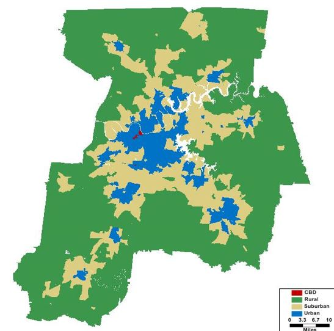
Latent Classes in Residence‐Workplace Location Choice and Travel Behavior Study
The goal of the research is to determine the effect of household characteristics on travel behavior and joint residence-workplace location choices using the latent class approach. Latent class models allow us to cluster households with similar characteristics which are able to better explain the travel behavior along with joint residence-workplace location choices.
Sponsored by: Tennessee Department of Transportation, 2016-2017. (P.I). [Report PDF]
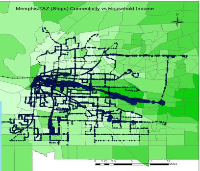
Assessment of Mobility and Transit Access to Captive Riders in Suburban and Rural Areas
The challenge is to determine (1) the number of people in a given geographic area likely to require a passenger transportation service and (2) the number of trips would likely to be made by those persons if they had minimal limitations on their personal mobility. These two sets of information will help planning agencies in strategizing to provide transit access to captive riders in rural areas.
Sponsored by: Tennessee Department of Transportation, 2016-2017. (P.I). [Report PDF]
Workzone Crash Performance Data Management
The proposed research determines, in close collaboration with TDOT, the appropriate set of measures for monitoring and evaluating Tennessee work zones performance in terms of safety, as well as for (monitoring and evaluating) the implemented strategies and the agency staff efficiency and awareness on safety issues.
Sponsored by: Tennessee Department of Transportation, 2016-2017. (P.I). [Report PDF]
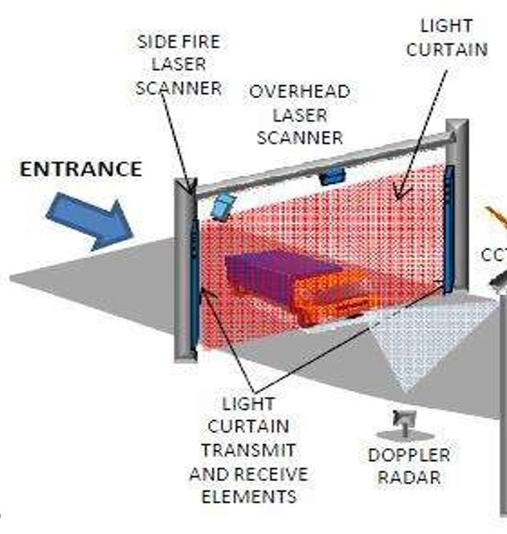
SmartPark-Pilot Study
The Federal Motor Carrier Safety Administration (FMCSA) started the SmartPark program in 2007, which is designed to connect the demand to the supply of truck parking. This initiative includes truck parking detector technologies integrated into a real-time truck parking information system that truck drivers can use to locate available truck parking.
Sponsored by: Tennessee Department of Transportation, 2016-2017. (Co-P.I). [Report PDF]

Maryland Statewide Transportation Model V2
Maryland Statewide Transportation Model V2
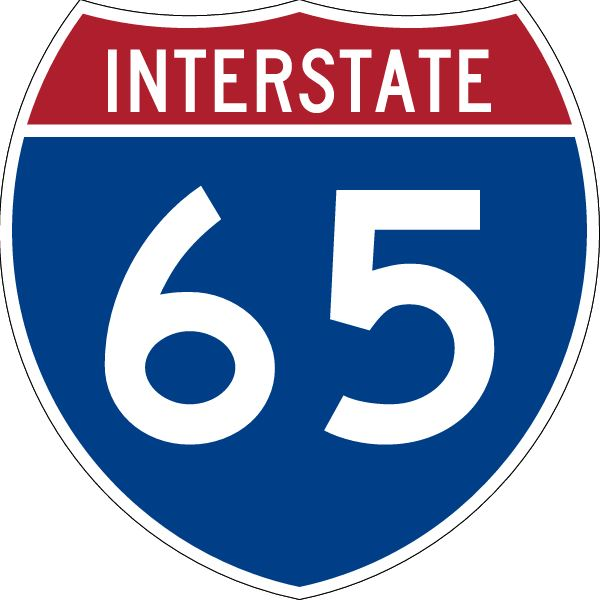
Interstate 65 Corridor Feasibility Study
Interstate 65 Corridor Feasibility Study
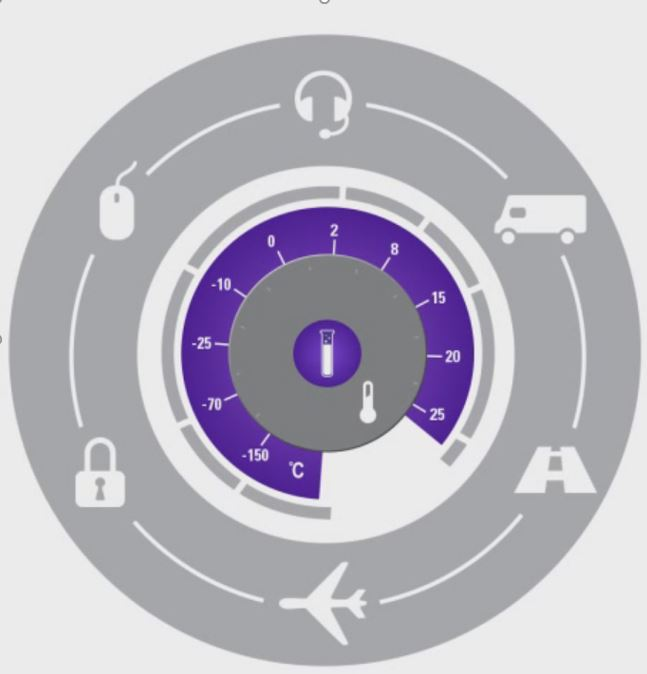
Big Data Analytics Meets Internet of Things: Paradigm Shift in Bio-logistics
In this project, we propose an optimization model that accounts for (i) packaging, (ii) storage, (iii) quality degradation, (iv) network congestion, (v) waste disposal, and (vi) potential supply chain of the perishable products. The non-linear non-convex integer optimization is formulated to minimize packaging cost subject to capacity, shelf-life, supply chain and other pragmatic product quality constraints.
Sponsored by: FedEx Institute of Technology & Intermodal Freight Transportation Institute, University of Memphis, 2016-2017. (Co-P.I).
An Alternative Biologistics for Pharmaceutical Products: 3D-Printed Tablets and Pills
This project explores the viability of using another 3D-printing technique called Laser Engineered Net-Shaping (LENS) for 3D-printing of drugs. In this technique the drug powders, bulk materials, and binding agent are accurately sprayed through three different nozzles to a small area which is heated by a focused laser to form the tablets and pills.
Sponsored by: FedEx Institute of Technology, University of Memphis, 2016-2017. (Co-P.I).
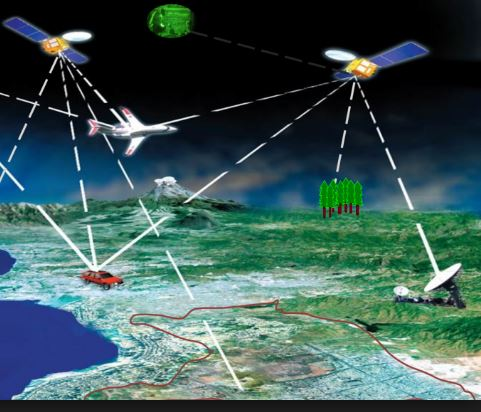
Addressing MAP-21 Freight Objectives using GPS Data
Sponsored by: National Center for Freight and Infrastructure Research and Education (CFIRE) and United States Department of Transportation, 2014-2015. (P.I)
FedEx Indianapolis Hub Secondary Sort-Phase II
This project analyzes two tasks: 1) update the package recirculation logic that is used by pre-processing data applications to generate input data for the full and reduced size simulation models with package recirculation; and 2) develop a new logic that will allow eliminating package queues at secondary feed conveyors behind accumulation slides for the full and reduced size simulation models with package recirculation and introduce new simulation objects in the models to account for the package recirculation time.
Sponsored by: FeEx, 2016 (Co-P.I.).
Simulating FedEx Indianapolis Hub Secondary Sort-Phase I
This project develops a simulation model of package flows from the Primary Matrix to Secondary Sorters, and from Secondary Sorters to Load Positions at the Indianapolis International Airport (IN) FedEx Hub. The tasks include facility operations, model input data, including package travel time estimation at the Primary Matrix and development of two data pre-processing applications. And three data post-processing applications to analyze the simulation output, and the seventh elaborates on how the simulation model can be used for scenario analysis.
Sponsored by: FeEx, 2015 (Co-P.I.).
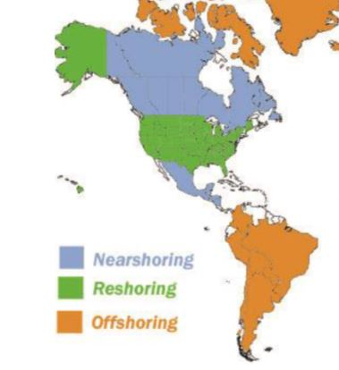
Reshoring and its impact on transportation infrastructure and US economy
Offshoring, gradually, transformed the global manufacturing environment, in which fixation on low cost labor was and most probably still is, a dominant motive for the manufacturing location decision. This offshoring phenomenon was followed by a decline of U.S. manufacturing and its share in the nations’ GDP, but also by millions of lost jobs this sector, traditionally, offered.
Sponsored by: National Center for Freight and Infrastructure Research and Education (CFIRE) and United States Department of Transportation, 2014-2015. (Co-P.I)
Incorporating peak spreading and reliability analysis into the Maryland Statewide Transportation Model
This project proposes a method to measure the value, forecast, and incorporate reliability in the transportation planning process.The proposed approach can be used to (1) provide a systematic approach to estimate travel time reliability for planning agencies, (2) incorporate travel time reliability in transportation planning models, and (3) evaluate reliability improvements gained from transportation network investments.
Sponsored by: Maryland State Highway Administration. 2014-2015. (Co-P.I)
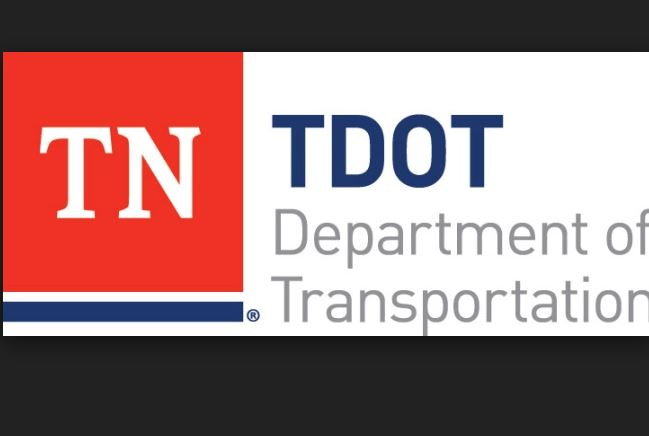
A guidebook for best practices on integrated land use and travel demand modelling
The objective of this study is twofold. First, provide an overview of land use models evolution and develop a guidebook with the best practices for integrated land use-transport modeling. Second, suggest the application of a land use model in a case study for demonstration purposes.
Sponsored by: Tennessee Department of Transportation, 2013-2014. (Co-P.I) [Report]
A Data Driven Approach to State Transportation Investment Decisions
"A Data Driven Approach to State Transportation Investment Decisions: a Transportation Project Investment and Evaluation Resource (T-PIER)",
Sponsored by: U.S Department of Transportation, Georgia Institute of Technology, and Georgia Department of Transportation, Co-P.I., 2014-2016.

A guidebook for freight transportation planning using truck GPS data
The main objectives of this study include: 1) review of current practices using truck GPS records to evaluate traffic conditions at freight corridors, 2) analysis of existing procedures to process truck GPS records, and identification of freight performance measures (FPMs) commonly used by researches and practitioners, 3) development of algorithms that can be used by Tennessee Department of Transportation (TDOT) to process truck GPS data and estimate link FPMs for the Tennessee (TN) Freight Transportation Network, 4) development of freight facility performance indicators, 5) analysis of inter- and intra-city truck trips within the State of TN.
Sponsored by: U.S Department of Transportation and Tennessee Department of Transportation, 2014-2015, (P.I). [Report]
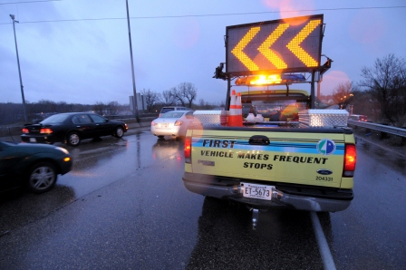
Effect of Primary and Secondary Crashes: Identification, Visualization and Prediction
There are two major objectives of this study. First, to develop a procedure to identify SCs in a relatively large transportation network with multiple roadway facility types using a static and a dynamic approach. Second, to develop prediction models to determine primary contributing factors and PC characteristics that may induce a SC. These crash prediction models would allow the TIM agencies to respond to an incident with necessary actions to reduce the likelihood of secondary crash occurrence.
Sponsored by: U.S Department of Transportation and Tennessee Department of Transportation, 2014-2015, (P.I). [Report]
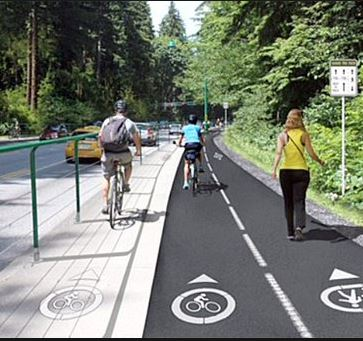
Protecting and Preserving Our Driving, Biking and Walking Infrastructure: Building a Transportation Project Investment and Evaluation Resource (T-PIER)
Sponsored by: The University of Memphis Research Foundation, 2013-2014, (P.I).

A Framework for Travel Demand Model Related Household and Person Level Control
In this project, we are facing the issue providing the supplemental input to PopGen-BMC, which is greatly used to generate a detailed socio-demographic characteristic of every resident household in the model area. PopGen-BMC synthesizes future year population based on observed base year data. Therefore, estimations of Socio-demographic characteristics that change over the time such as aging of population are less dependable. At present, limited set of variables (Number of Household by Size; Number of Household by Income; Number of Household by Worker and Total Population; Group Quarters Population) are used as controlled inputs to PopGen-BMC to generate other detail variables of interest.
Sponsored by: Baltimore Metropolitan Council, 2012-2013, (P.I.) [Draft Report]

An Integrated Framework for Modeling Freight Mode and Route Choice
This research presents a methodology to determine freight mode choice to use in the statewide travel demand modeling. By using logistic regression, and commodity-specific From, To, and Within MD models were developed. Examples of each model are discussed in the report. Application of the proposed methodology could potentially be used in the Maryland Statewide Transportation Model (MSTM) was presented. The research results can be used to determine mode choice and to make broad level policy decisions on statewide freight travel.
Sponsored by: Maryland State Highway Administration, 2011-2012, (P.I). [Report]
Maryland Statewide Transportation Model: Corridor Level Modeling
Sponsored by: Maryland State Highway Administration, 2011-2012, (Co-P.I).
Maryland Statewide Transportation Model: Calibration and Validation
Sponsored by: Maryland State Highway Administration, 2010-2011, (Co-P.I).
Envisioning the Future of Federal Workplaces in Washington Region
Sponsored by General Services Administration, Washington DC Office of Planning, 2010-2011, (Co-P.I).

Development of a Statewide GHG Emission Model
Sponsored by: Maryland State Highway Administration, 2010-2011, (P.I).
Senior Personnel research projects
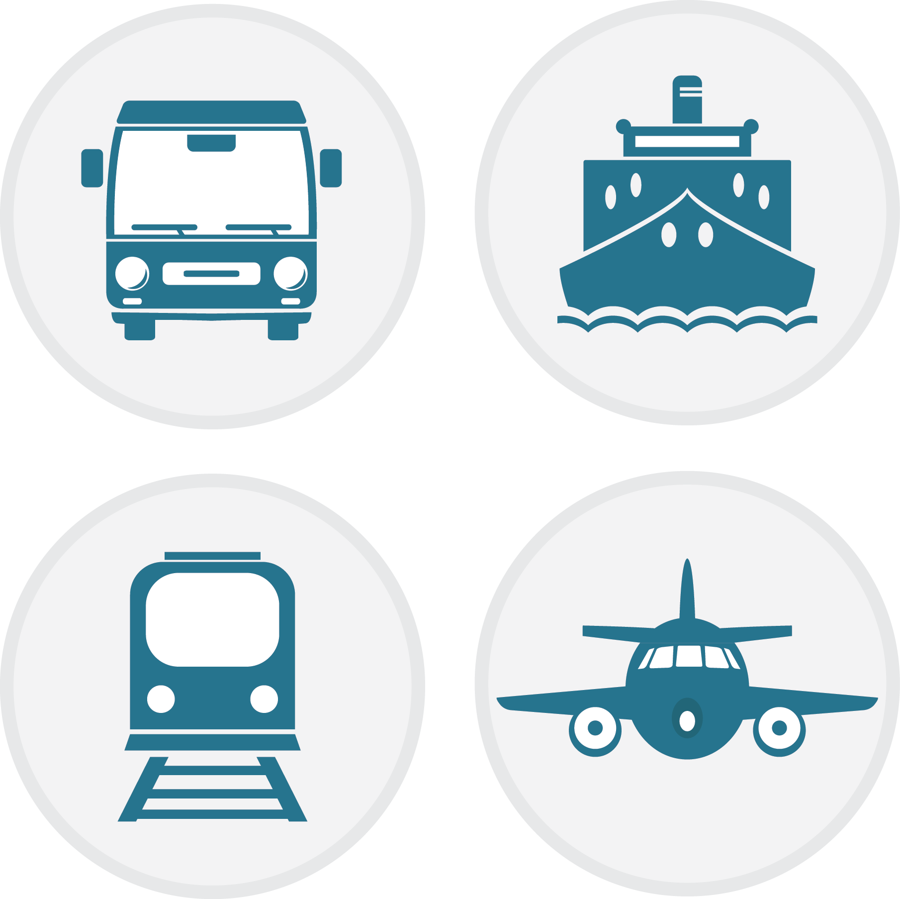
Maryland Statewide Transportation Model: Development, Calibration, and Validation
Sponsored by: Maryland State Highway Administration, 2010-2011.
Maryland Statewide Transportation Model
Sponsored by: Maryland State Highway Administration, 2009-2010.
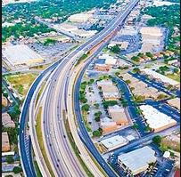
Mega-Region Travel
Sponsored by: Federal Highway Administration, 2010-2011.
Synthetic Population Generator: Integration with Travel and Land Use Models
Sponsored by: Baltimore Metropolitan Council, 2010-2011..
Maryland Scenario Project
Sponsored by: Maryland Department of Transportation, 2010-2011.
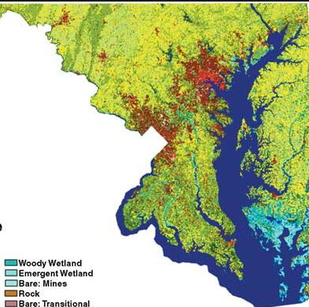
Continued Improvement in LEAM model’s role in Maryland Land Use Modeling and Analysis-Phase III with University of Illinois Urban Champaign
Sponsored by: Maryland Department of Transportation 2009-2010.
Maryland Scenario Project
This project presents analyses of statewide land use and transportation scenarios conducted using the statewide modeling framework. The purpose of this analysis was not to test specific or proposed land use or transportation policies but instead was to examine broad alternative land use and transportation scenarios. Both the land use and transportation scenarios reflect trends and ideas frequently discussed and in that sense they represent important and useful enquiries. They lay the foundation for more specific analysis in the future. [Report]
Sponsored by: Maryland Department of Transportation, 2009-2010.

Transportation Investment Decision Making under Uncertainty
Sponsored by: U.S. Department of Transportation, through the University of Toledo, University Transportation Center (UTC) Program, 2007-2009.

Modeling Metropolitan Detroit Transit
The primary objective of this project is to develop a quick-response tool for sketch planning purposes that may be used by other cities to test the feasibility of building LRT systems along a predefined transit corridor (i.e., a corridor with existing transit service, in form of buses). The primary focus of this study is to maximize the use of available data without any new data collection effort. In the report, the authors present an LRT case study for Detroit, where a number of LRT planning studies are currently underway, each with specific objectives, followed by a set of guidelines that can be used by transit planners for sketch planning of LRT. The guidelines are designed to assist transit planners in the preliminary planning effort for a LRT system on an urban travel corridor with existing bus services.
Sponsored by: US Dept. of Transportation through Michigan-Ohio (MIOH) UTC, and Michigan Department of Transportation, 2007-2008. [Report]
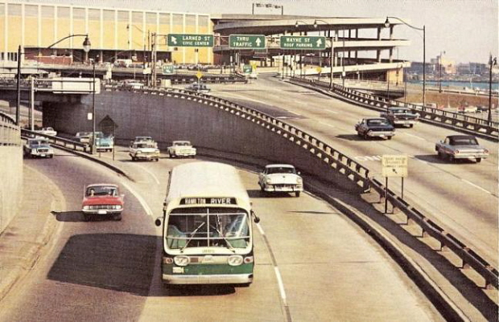
Transit Oriented Development in Detroit Metropolitan Region
Sponsored by: U.S. Department of Transportation/ Michigan-Ohio (MIOH) UTC Program and Michigan Department of Transportation, 2009.

Congestion Relief by Travel Time Minimization in Near Real Time-Detroit Area I-75 Corridor Study
Sponsored by: U.S. Department of Transportation/ Michigan-Ohio (MIOH) UTC Program and Michigan Department of Transportation, 2008-2009.
Public-Private Ownership of Transportation Infrastructure in Large Multi-Jurisdictional Metropolitan Areas
Sponsored by: Wayne State University Center for Legal Studies, 2005-2007
Safety Improvements for Urban Arterials
The subject of this research project is urban arterials with a focus on signalized intersections on the 2,400 mile-long state trunk line in the Detroit metropolitan area, which comprises approximately 25% of the entire state trunk line system under the jurisdiction of the Michigan Department of Transportation (MDOT). Further, these 2,400 miles account for approximately 10% of the highway mileage in the Detroit metropolitan area. The state trunk line is the most heavily traveled in the region, accounting for more than 60% of the regional travel, measured in Vehicle Miles of Travel (VMT). Assuming a linear relationship between VMT and traffic crashes on urban arterials in the state trunk line, the cost of the losses is estimated at $2.5 billion annually in the Detroit metropolitan area. In brief, the research reported in this document addresses an estimated $2.5 billion dollar annual problem.
Sponsored by: Michigan Department of Transportation, 2005-2006. [Report]
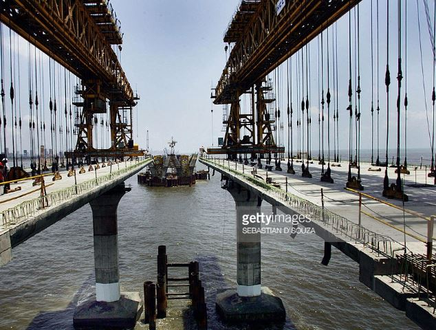
Travel Demand Modeling and Forecasting for Western Freeway Sea Link
Sponsored by: Maharastra State Road Development Corporation, Mumbai, India, 2004-2005.
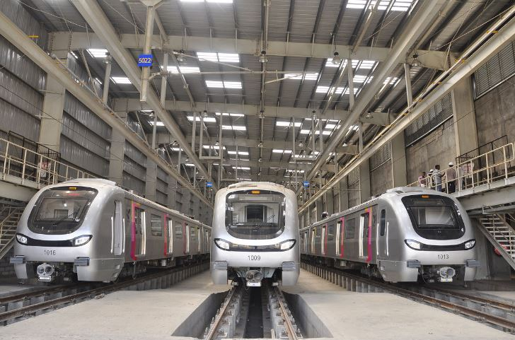
Mumbai Metro Phase-1 Travel Demand Modeling and Forecasting: Andheri-Ghatkopar-Versova Link
Sponsored by: Tata Consultancy Services, India, 2004-2005.
Traffic and Parking Study for International and Domestic Airport, Mumbai
Sponsored by: Airport Authority of India, 2003-2004.